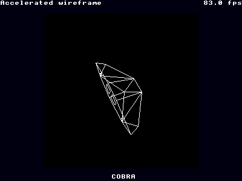

wireframe¶
{kind=link}
Wireframe is a demonstration of the use of the Gameduino’s J1 coprocessor. The coprocessor is a fast small CPU on the Gameduino itself that can greatly speed up graphics-intensive tasks. In this sample, the coprocessor clears the screen and draws lines while the Arduino does the geometry calculations. By splitting the work in this way, the speedup is approximately 10X.
There are two programs loaded into the coprocessor: eraser handles screen clears, and wireframe handles line drawing. The code for erase.fs is a loop:
this code ANDs every byte in the 16K sprite image RAM with the given mask. It then signals completion by writing zero to COMM+7.
The code for wireframe is the inner loop of Bresenham’s line drawing algorithm:
The line() method below interfaces with this microcode. line() computes the line parameters, then writes them to the COMM area and triggers the coprocessor. While the coprocessor is drawing the pixels on the line, the host CPU can compute the parameters for the next line. This parallelism, together with the speed of the coprocessor at drawing pixels, is the key to the fast rendering in this sample.
The Arduino sketch is split into three parts. First a simple plotting class provides an easy way to draw lines, and do the housekeeping of double-buffered rendering:
- bool PlotterClass::begin()¶
Initialize the plotting library, set up sprites in a 16x16 grid as in the bitmap sample.
- void PlotterClass::line(byte x0, byte y0, byte x1, byte y1)¶
Draw a line from (x0,y0) to (x1,y1).
- void PlotterClass::show()¶
Display the current screen, clear the next screen.
The next part is the 3D geometry functions. project() takes object models points, and rotates and transforms them to a list of 2D points. This work is all done on the Arduino in floating-point. Then draw() uses these points and the model’s edges to draw the lines. The object models are taken from the classic video game Elite, kindly made available by Ian Bell.
Finally, the top-level loop cycles around the models, moving them towards and away from the camera.
Last modified $Date: 2011-05-13 11:32:42 -0700 (Fri, 13 May 2011) $
Last modified $Date: 2011-05-13 11:32:42 -0700 (Fri, 13 May 2011) $